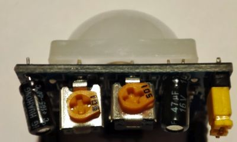

Der PIR-Sensor gibt über einen Pin ein Signal aus, sobald er eine Bewegung registriert.
Die Pins des PIR-Sensors sind meistens unter der weißen Plastikhaube beschriftet. Diese Haube ist nur aufgesteckt - du kannst sie vorsichtig nach oben abziehen.
Verbinde jetzt die Pins passend zur Beschriftung:
Auf der Vorderseite des Sensor befinden sich zwei orange Potentiometer:

Sie können mit einem kleinen Schraubenzieher verstellt werden.
Definiere zunächst für den Sensor-Pin eine Variable und setze in der setup()-Methode diesen Pin als Eingang. Außerdem schalten wir den seriellen Monitor ein und stellen seine Datenrate auf 9600 Baud. Die serielle Schnittstelle überträgt jetzt maximal 9600 Zeichen pro Sekunde.
int sensor = 6;
void setup(){
pinMode(sensor,INPUT);
Serial.begin(9600);
}
In der loop()-Methode wird der Wert des Sensors ausgelesen.
Wenn dieser Wert HIGH ist, wird eine entsprechende Nachricht über die serielle Schnittstelle ausgegeben.
void loop(){
int wert=digitalRead(sensor);
if (wert==HIGH){
Serial.println("Bewegung");
delay(1000);
}
delay(10);
}
Teste deine Alarmanalage. Nach dem Hochladen des Programms musst du den Seriellen Monitor einschalten: